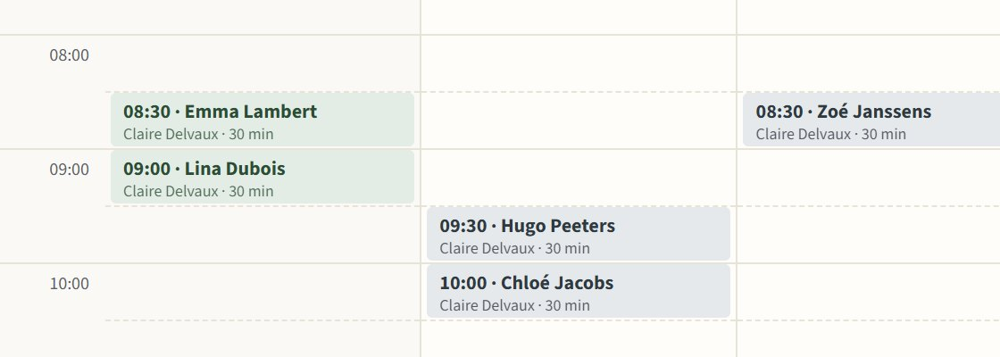

Le premier rendez-vous
Anamnèse, premières démarches, explications au patient ou à ses parents : tout part de là.
- Anamnèse guidée, gardée au dossier
- La démarche reste accessible dans l'espace patient

Côté parent : la démarche, dans son espace Kalyria.